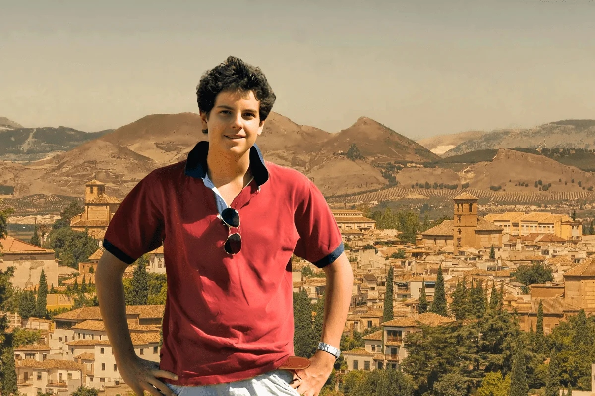
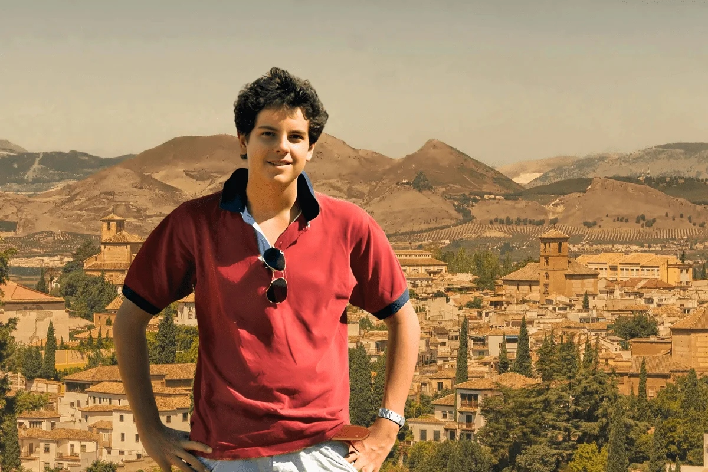

Quem foi São Carlos Acutis?
São Carlos Acutis nasceu em Londres, no dia 3 de maio de 1991, filho de pais italianos. Desde pequeno, Carlo demonstrou uma profunda fé católica e um amor especial pela Eucaristia. Ele frequentava a missa diariamente e tinha uma devoção particular à Virgem Maria.
Carlo era um garoto muito inteligente e talentoso, especialmente em informática. Ele usava suas habilidades para criar um site que documentava milagres eucarísticos ao redor do mundo, com o objetivo de promover a fé e a devoção à Eucaristia.
Infelizmente, Carlo faleceu precocemente aos 15 anos, em 12 de outubro de 2006, devido a uma leucemia fulminante. No entanto, sua vida breve foi marcada por uma profunda espiritualidade e um compromisso inabalável com sua fé.
Em 2020, Carlo Acutis foi beatificado pelo Papa Francisco, tornando-se o primeiro beato do século XXI. Sua beatificação reconhece sua vida virtuosa e seu exemplo de santidade jovem, inspirando muitos jovens ao redor do mundo a viverem sua fé com entusiasmo e dedicação.
São Carlos Acutis foi canonizado em 07/09/2025, tornando-se oficialmente um santo da Igreja Católica. Sua canonização é um testemunho de sua vida exemplar e de seu impacto duradouro na fé católica.
São Carlos Acutis é frequentemente lembrado como um modelo de santidade para os jovens, mostrando que é possível viver uma vida santa mesmo em meio às distrações e desafios do mundo moderno.

 
